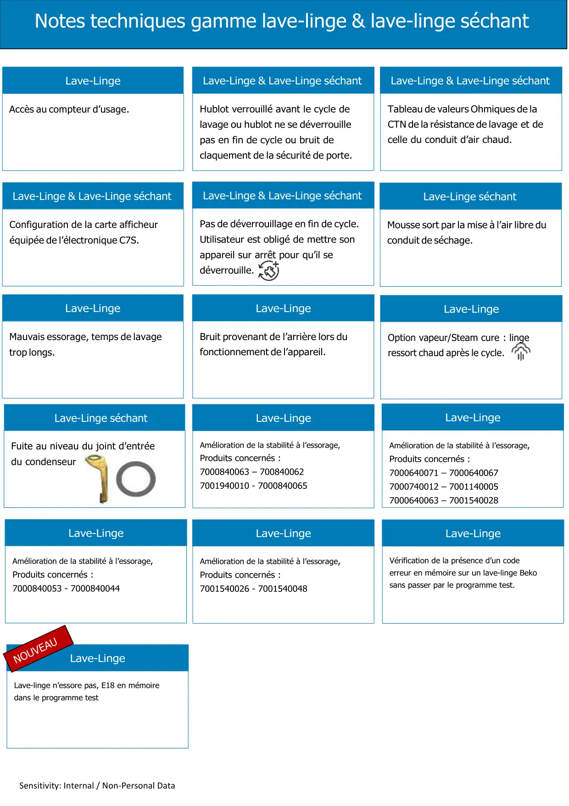

Lave-linge & lave-linge séchant

Sensitivity: Internal / Non-Personal DataNotes techniques gamme lave-linge & lave-linge séchantOption vapeur/Steam cure : lingeressort chaud après le cycle.Mauvais essorage, temps de lavagetrop longs.Lave-LingeConfiguration de la carte afficheuréquipée de l’électronique C7S.Lave-Linge & Lave-Linge séchantAccès au compteur d’usage.Lave-LingeLave-Linge séchantFuite au niveau du joint d’entréedu condenseur
1 / 1Liens de ce document (16)
PDFBulletin technique modification boite à produits lave linge séchant2 p.PDFPas de deverrouillage en fin de cycle app en défoulage1 p.PDFFonction vapeur lave linge1 p.PDFBulletin Technique Bruit anormal UWM1 p.PDFBulletin Technique lave linge Hublot Verrouillé ou tente de se verrouiller2 p.PDFTuyau de vidange lave linge Intégrable1 p.PDFConfiguration afficheur electronique C7S4 p.PDFNote Technique Accès Compteur Usage et Code erreur2 p.PDFLAVE LINGE SECHANT fuite d'eau au niveau du joint d'entrée de condenseur3 p.PDFValeurs sondes Lave linge & Lavante Séchante1 p.PDFNote Technique lave linge Amélioration de la stabilité lors des phases d'essorage bulletin11 p.PDFNote Technique lave linge = Amélioration de la stabilité lors des phases d'essorage bulletin 32 p.PDFNote Technique lave linge = Amélioration de la stabilité lors des phases d'essorage bulletin 21 p.PDFNote Technique lave linge = Amélioration de la stabilité lors des phases d'essorage bulletin 41 p.PDFAccès codes erreur lave linge sans passer par prog test2 p.PDFNote Technique Lave Linge Pas d Essorage E18 En Mémoire Dans La Carte Electronique2 p.